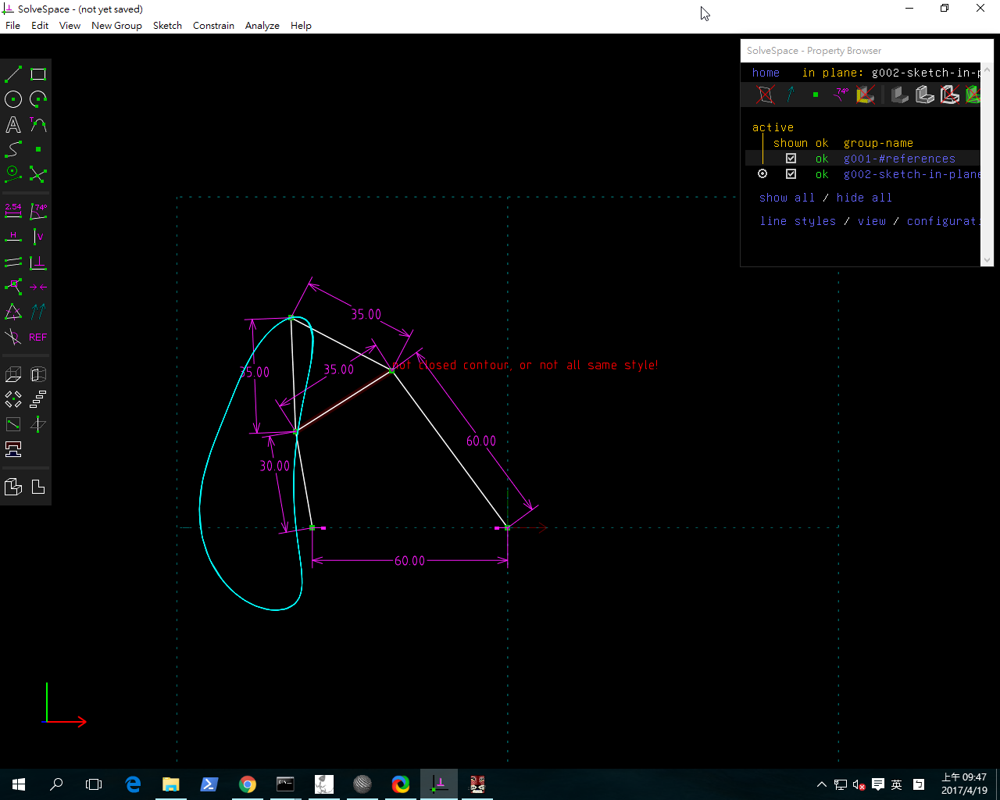
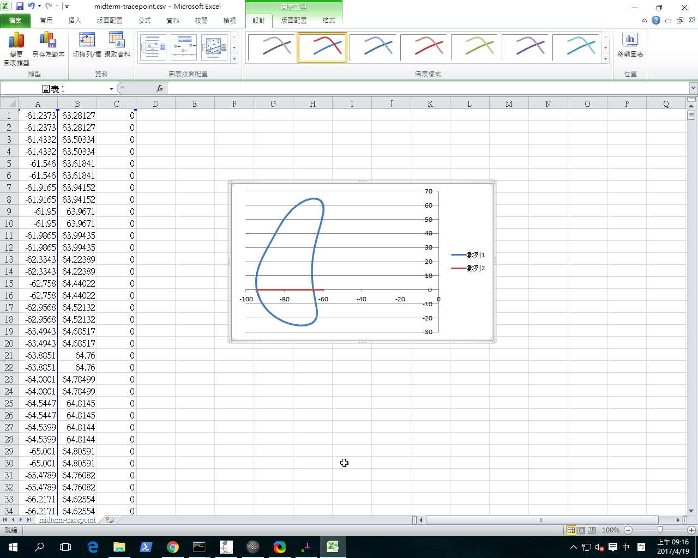

第九週上課內容
期中協同查驗與自評
1.Fossil Server 實習查驗
由組員或是組長在教室中用電腦建立fossil server,設定好使用者及密碼後再來是組員個別登錄上去,在wiki建立期中心得報告的格式,打入期中的心得
2.四連桿機構協同 Trace Point 查驗
各組員用solvespace畫出四連桿,追蹤 T 點軌跡座標並另外檔 (請以 midterm1.csv, midterm2.csv .... 依序命名)
各組組員請依學號遞增排序, 排序第1者負責分析 Length=50 的 T 點軌跡圖, 其餘組員則依序將 Length -5的方式來縮減上三角的尺寸


3.Fourbar Walker OnShape 零件協同繪圖與組立查驗
請各組依照基本尺寸規劃, 以協同方式在 OnShape 環境中完成四連桿四足行走機構, 並分別拍攝協同規劃與實際操作影片, 將影片送到 1) Youtube 2) Vimeo 以及各組的 Fossil Server.

2017CD 第九週-期中作業-四連桿機構協同 Trace Point 查驗 from 40423248 on Vimeo.
2017CD 第九週-期中作業-Fourbar Walker OnShape 零件協同繪圖與組立查驗 from 40423248 on Vimeo.